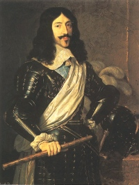

1610-1643Règne
1640Réforme
Louis d'orCréation
ÉcuArgent
Louis XIII (1610-1643) règne avec la forte influence de Richelieu. L'événement monétaire majeur de son règne est la réforme de 1640-1641 : création du louis d'or et réintroduction de l'écu d'argent, qui modernisent le système monétaire français.
Ces nouvelles espèces, d'un poids et d'un titre mieux contrôlés, marquent une étape importante vers le système monétaire de l'Ancien Régime classique. Les monnaies de Louis XIII sont particulièrement recherchées par les collectionneurs.
Sources : catalogues Ciani, Duplessy · infonumis.info
Quart d'écu de Navarre
Date : 1615 ; Atelier : St Palais
Argent ; 30 mm ; 9.29g
Avers : LVDOVICVS• XIII• D• G• FRANC• ET• NAVA• RX• ; Croix fleurdelisée.
Revers : GRATIA DEI SVM ID. Q SVM 1615 M ; Ecu de France - Navarre couronné.
Références : C.1692 Ga.29 Dy.1336
Double tournois, type 2 de Paris (buste juvénile au col rabattu)
Date : 1626 ; Atelier : A (Paris) ; 0****** exemplaires ; Degré de rareté : R1
Cuivre ; 20.5 mm ; 2.90g
Avers : .LOYS. XIII. R. DE. FRAN. ET. NAV. - A, (légende commençant à 6 heures) (Louis XIII, roi de France et de Navarre) ; Buste de Louis XIII à droite, lauré, drapé et cuirassé, au col plat.
Revers : + DOVBLE. TOVRNOIS. 1626 ; Trois lis posés 2 et 1.
Références : Dr.91-92 Dr.2/129
Denier tournois, type 1
Date : 1614 ; Atelier : A (Paris) ; 1.801.966 exemplaires ; Degré de rareté : R1
Cuivre ; 17 mm ; 1.59g (théorique 1.568g)
Avers : .LOYS. XIII. R. DE. FRAN. ET. NAV. - A. (légende commençant à 6h) (Louis XIII, roi de France et de Navarre) ; Buste enfantin de Louis XIII, lauré, drapé et cuirassé à droite avec le petit col plat ; lettre d'atelier à 6 heures.
Revers : +. DENIER. TOVRNOIS. 1614. ; Deux lis au-dessus de la lettre d'atelier.
Références : C.1725 G.1 Dr.161 Dy.1359